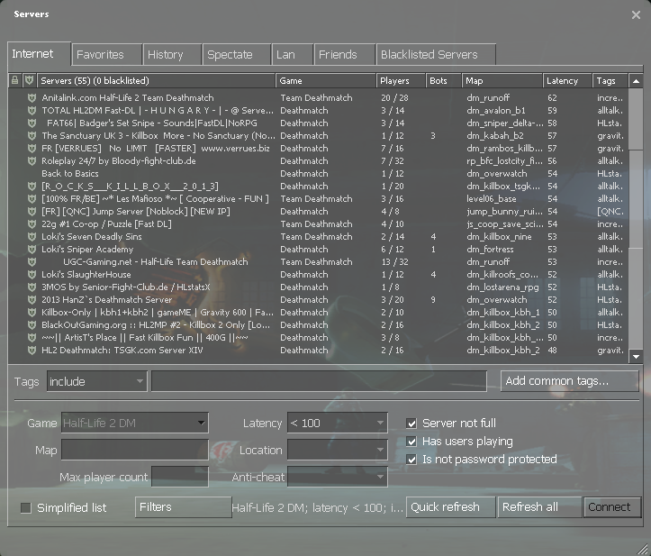
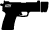
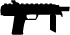
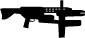
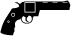
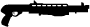
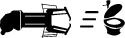
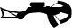
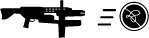
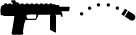

HL2DM 101 - Introduction to HL2DM

A Brief History
11/16/04 - Half-Life 2 is released.
11/30/04 - Half-Life 2 Deathmatch is released as a free download to all owners of Half-Life 2. The release includes two official maps: dm_lockdown and dm_overwatch. The Half-Life 2/Source SDK is also released and a HL2DM
map making competition is announced to kickstart the custom map-making community.
12/10/04 - An important update is released fixing several bugs and toning down magnum damage.
02/17/05 - An update is released adding SLAMs, crowbar and stunstick to the list of HL2DM weapons. A third Valve map is released: dm_steamlab.
03/18/05 - Valve announces the winners of the map-making contest. The winning map is dm_underpass, with dm_resistance second, and dm_powerhouse coming in third. A fourth map, dm_avalon, gets an honorable mention.
03/18/05 - The three contest winning maps are officially released, increasing the number of official maps to six.
04/25/05 - An update is released adding the fourth Valve produced map and seventh official map: dm_runoff.
05/17/06 - The FIOS Grand HL2DM Tournament is announced. The tournament will be a collaborative effort by Verizon, Valve and the Cyber Amateur League. The format is 1v1 play on official maps, with $100,000 in prize money
awarded to the last gamer standing.
06/16/06 - In preparation for FIOS Grand, Valve releases an update addressing many of the participant concerns. Most noticable is the removal of hyper-blasting with the gravity gun.
06/17/06 - The FIOS Grand Tournament begins.
07/27/06 - In preparation for the FIOS Grand finals, Valve releases an update adding the ability to spectate game play if it is enabled on the server.
07/29/06 - After roughly 45 days of play, Micah "MicahWave" Ernst makes a name for himself by winning the Verizon FIOS Grand HL2DM Tournament.
08/22/06 - HL2DM divisions open up in the Cyber Amateur League in 2v2 and 4v4 formats.
01/08/07 - A 1v1 division for HL2DM is added to the Cyber Amateur League.
The HL2DM GUI
Upon starting up HL2DM, the first screen you will reach is the splash screen, or GUI (Graphical User Interface). This features five menu choices:
Find Server - You will use this frequently. This function is used to locate and connect to a game server.
Create Server - This can be used to host games, but it will typically not perform well due to bandwidth and computer performance issues. It can be useful for map testing and practise purposes however.
Friends - Allows you to to add other steam users, chat with them, invite them to a game etc.
Options - Contains many settings to customize your game. It is best to familiarize yourself with the various settings in here so you know what can be adjusted in the GUI once you start playing.
Quit - Quit game.
The Server Browser
First lets take a close look at the server browser. This is the tool you will use to determine which server you want to join. When you click Find Server, the following will appear:

There are several tabs along the top of this window with different server categories. In this image, the Internet tab is selected. This is the most useful tab, but it may be beneficial to explore the functionality of the others also.
Along the top of the list are headers. Note that each of these headers is also a button that can be clicked to sort the servers by that heading. On the far left is a padlock. This indicates if the server is public or private. A padlock in this column means the server is private and you require a password to obtain access. Note that some servers may be public at some times and then locked for private matches at others.
Next to the padlock is a shield icon. This indicates if the server is protected by Valve Anti-Cheat (VAC) or not.
Next is the list of servers. These names are decided by the server owner and may or may not give an indication of the type of server you are logging on to. The number in brackets next to the header is a total count of the servers being displayed in the list.
The next column shows the type of game being played, free-for-all (FFA) or team deathmatch (TDM). Team Deathmatch is Rebels vs. Combine.
The fifth column shows how many players are in the server and how many spaces or slots are available in total. Finding a quality server with enough players for a good game is the goal, so this information is very useful when deciding which server to join.
Next is the maps header. You can get a good idea of which maps are popular by sorting by this header and seeing which maps are most often run and which maps have the most players. Although it is typical for a HL2DM map to begin with the letters "dm", this is not a hard rule and many maps deviate from this. Sometimes a map name will indicate a certain style of play, such as "capture the flag" maps having a prefix of ctf.
The final column in the list is latency, or ping. This information is critical as it represents how fast data can be transferred to and from your computer. The number in this column represents data transfer time in miliseconds (ms), therefore the lower the number, the faster the data transfer. The reason this number varies so much is mainly because of the geographical location of the server. A server located in the same area as you should ping less than 30 ms, while a server on a different continent may ping 200+ ms. Try to find servers with pings less than 60 ms if possible, the lower the better. If your ping is too high, you may experience significant lag during play.
Below the list is a button labelled change filters. By pressing this button, you gain access to several fields that can be used to filter the list down to only the servers that suit you.
Before logging on to a server, lets take a look at some of the things you will encounter in-game.
Weapons
The best way to learn about weapons is to use them a lot. The following serves as a useful introduction to the weapons for new players and also a reference for those who have been playing for a while.
MELEE WEAPONS
Crowbar
Body Damage: 25
Head Damage: 25
Crowbar is the melee weapon that rebel character models are equipped with by default.
Stunstick
Body Damage: 40
Head Damage: 40
Stunstick is the melee weapon that combine character models are equipped with by default.
HITSCAN WEAPONS
Hitscan weapons are ones where there is no delay between when you pull the trigger and the round hitting the target. This means you should always try to line up your target perfectly each time you fire. All hitscan weapons do
3 times the damage when shot to the head.
Pistol

Clip Size: 18
Ammo with Weapon: 168 rounds
Ammo Pickup Size: 20 rounds per pickup
Max Ammo Capacity: 168 rounds
Body Damage: 8
Head Damage: 24
All players are equipped with a pistol by default.
SMG

Clip Size: 45
Ammo with Weapon: 90 rounds
Ammo Pickup Size: 45 rounds per pickup
Max Ammo Capacity: 270 rounds
Body Damage: 5
Head Damage: 15
All players are equipped with an SMG by default.
AR2 (AKA Combine Rifle or Overwatch Standard Issue)

Clip Size: 30
Ammo with Weapon: 60 rounds
Ammo Pickup Size: 20 rounds per pickup
Max Ammo Capacity: 90 rounds
Body Damage: 11
Head Damage: 33
.357 Magnum

Clip Size: 6
Ammo with Weapon: 12 rounds
Ammo Pickup Size: 6 rounds per pickup
Max Ammo Capacity: 18 rounds
Body Damage: 75
Head Damage: 225
Shotgun

Clip Size: 6 shells
Ammo with Weapon: 12 shells
Ammo Pickup Size: 20 shells per pickup
Max Ammo Capacity: 36 shells
Single Barrel Damage
Body Damage: 9 - 63 (7 shots x 9 damage)
Head Damage: 27 - 189 (7 shots x 27 damage) 135 (4 shots x 27 damage + 3 shots x 9 damage)
Primary fire uses one shell to release 7 shots in close formation, each worth 9 points damage. This may therefore cause 9 to 63 points of damage depending on the number of shots from the shell that actually hit. A headshot can
in theory do from 27 to 189 135 points of damage.
Double Barrel Damage
Body Damage: 9 - 108 (12 shots x 9 damage)
Head Damage: 27 - 324 (12 shots x 27 damage) 216 (6 shots x 27 damage + 6 shots x 9 damage)
Secondary fire uses two shells to release 12 shots in a wider formation than single barrel, each worth 9 points damage. This may therefore cause 9 to 108 points of damage depending on the number of shots from the shells that actually
hit. A headshot can in theory do from 27 to 324 216 points of damage.
Real Damage Explanation
The shotgun, although a hitscan weapon (a weapon that fires bullets; in this case, pellets), does not entirely follow the hitscan damage formula, according to this: https://github.com/ValveSoftware/source-sdk-2013/blob/master/sp/src/game/shared/baseentity_shared.cpp
Inside this 'for' loop, found at line 1698 (on 18feb2014):
for (int iShot = 0; iShot < info.m_iShots; iShot++)
that iterates through all the bullets fired, from 0 to either 6 or 11 (for the shotgun's 7 pellets for single barrel or 12 pellets for double barrel), there's also this condition at line 1729:
if( IsPlayer() && info.m_iShots > 1 && iShot % 2 )
that checks if bullet is not singular, aka if shotgun was fired, and if the current bullet number is odd, it applies a hull trace; if even, then a line trace is applied.
The difference is the hull trace ignores hitboxes (arm, chest, leg, stomach, head), better yet, doesn't differentiate between them, treating the body as a whole, for increased accuracy. Therefore the headshot multiplier of 3 is
disregarded, making that bullet do normal damage even if inflicted to the head hitbox.
This leaves the known body damage unchanged, 9 - 63 for single (player left with 37/0 from 100/0; 9 - 108 for double (player left with 78/114 from 100/200), but changes the maximum damage for the head.
The single barrel will have the pellets split like this: 0, 2, 4, 6 will do head damage (4 x 27 = 108); 1, 3, 5 will do normal body damage (3 x 9 = 27); the new total will be 135 (player left with 73/92 from 100/200).
The double barrel will have 6 pellets do head damage, 162; 6 pellets do body damage, 54; total damage inflicted will be 216 (player left with 57/28 from 100/200). Why is damage taken only 215? The formula for the damage absorption
helps: 80% or 172.8 done to suit, 20% or 43.2 done to health. This leaves the player with 28.2 suit left, rounded down to 28, and 56.8 health left, rounded up to 57.
PREDICTION WEAPONS
Prediction weapons have a delay from the time fired to hitting the target, therefore requiring you to predict the location of your opponent when making the shot.
Prop Physics / Gravity Gun

Body Damage: Varies *
Head Damage: Same as body *
All players start with a gravity gun in their inventory by default. The gravity gun is the most dynamic weapon in the game and can be used for a multitude of purposes, including picking up and throwing objects at your opponent,
catching and returning objects thrown at you, cooking and firing grenades, using objects as shields, and much more.
* Damage done by the gravity gun varies depending on the following attributes of the object being flung:
Mass
This is not always related to size, some objects are small and heavy, such as a radiator.
Velocity
Heavier objects will lose velocity faster, making longer distance kills harder.
Z-Axis Spin
For example, saw blades spin vertically as they fly.
Angle of Hit on Body
A direct blow hurts more than a glancing one.
Energy Lost when Hitting a Player
Most props slow down and change angle when they hit a player. If you are the second person hit you will take less. Exceptions include the zombie gibbler (big propellor thing), among other things, that will pass through multiple
players without losing energy.
Explosive Properties of the Object
Explosive objects yield extra damage. A barrel is used as an example here because it is so common.
Barrel Maximum Damage: 180 (plus additional physics damage on a direct hit, typically instant kill).
Damage with barrel held in Gravity Gun: 160
Barrel Splash Radius: 256 units
Explosive props may also be caught in the gravity gun and thrown back.
Crossbow

Ammo with Weapon: 5 bolts
Ammo Pickup Size: 6 bolts per pickup
Max Ammo Capacity: 11 bolts
Body Damage: 100
Head Damage: 100
Orb

Ammo Pickup Size: 1 orb per pickup
Max Ammo Capacity: 3 orbs
Body Damage: 1000
Head Damage: 1000
Orbs must be gathered and are fired by using secondary fire on the AR2. An orb kills any enemy it touches and can continue on to kill several opponents. Use it with caution however, as it can be caught by your opponent in their
gravity gun and fired back at you. Orbs also have tracking built into them and will track a target on each bounce.
EXPLOSIVES
Explosives yield splash damage that gets gradually less depending on splash radius and the number of units distance away you are upon detonation. Explosives will yeild 5 to 10 points damage at the edge of their splash radius.
Note that explosives are self-harming, meaning if you get caught in the blast radius of your own explosive, you will take an appropriate amount of damage. To see your position and how far the splash radius is, enter the following
in your console: cl_showpos 1
Hand Grenade
Ammo Pickup Size: 1 grenade per pickup
Max Ammo Capacity: 5 grenades
Maximum Damage: 250
Damage held in Gravity Gun: 225
Splash Radius: 256 units
All players start with two hand grenades by default. Grenades can be thrown, lobbed, rolled along the floor, and picked up in the gravity gun and fired. Grenades thrown and fired at you may also be caught and fired back. All of
these factors make the grenade a highly dynamic and versatile weapon.
SMG/Impact Grenade

Ammo Pickup Size: 1 SMG Nade per pickup
Max Ammo Capacity: 3 SMG Nades
Maximum Damage: 200 *
Damage held in Gravity Gun: N/A
Splash Radius: 192 units
* SMG Nades appear to do more damage to armor than to health. Until an accurate formula can be determined, the rule of thumb is that they will do approximately 95 damage with a 2x multiplier to any armor affected. SMG Nades also
have a small amount of mass and may or may not deliver an additional point of physics damage on a direct hit.
RPG
Ammo With Weapon: 3
Ammo Pickup Size: 1 rounds per pickup
Max Ammo Capacity: 3 rounds
Maximum Damage: 250
Damage held in Gravity Gun: N/A
Splash Radius: 384 units
Starting Ammo: 3
SLAM
Ammo Pickup Size: 3 slams per pickup
Max Ammo Capacity: 5 slams
Maximum Damage: 300
Damage held in Gravity Gun: 200
Splash Radius: 192 units
Starting Ammo: 3
Slams can either be placed as laser tripped mines, or thrown as satchel mines and detonated at will. Note that satchel slams may be picked up in the gravity gun and thrown. Satchel slams will also detonate upon your death, offering
the possibility of harming or killing any enemies within the splash radius.
Health and Armor
When you get hit, armor absorbs 80% of any damage taken. You always take a 20% hit to your health regardless of how much armor you have. This means for example that if you have 20 hp and 100 armor, 100 points of damage will still kill you.
Keeping your health and armor up are essential to survival. The following are available to help you recover your health and armor:
Small Health Pack
Health Per Pack: 10
Large Health Pack
Health Per Pack: 25
Armor Pack
Armor per Pack: 15
Health Charger
Click and hold the "use" key to recover up to 30 points of health.
Armor Charger
Click and hold the "use" key to recover up to 30 points of armor.
Super Charger
Click and hold the "use" key to recover both health and armor. It charges health at a much faster rate than a regular charger. It also has the ability to charge armor up to a maximum of 200 instead of the usual 100.
Some Gameplay Concepts
The following are some of the more controversial aspects of the game. Before you pass judgement, keep in mind that nobody can tell you the "right" way to play the game. Server admins can, however, decide what they want the rules to be for their server. Part of the challenge of finding a good server is finding a server with rules you agree with and admins that enforce them in a fair manner.
Camping
Camping is staying still in one location on the map to obtain sniper kills or ambush kills. Camping as a strategy can also be used to control a strong area or weapon.
Check the server rules before you do this. Some server admins ban excessive camping because they feel it is a cheap way to obtain kills. For the most part you will be fine though, and in competitive play it is a standard strategy. Along with improving your map control, studying camp locations will help you develop new strategies for removing those that try to use them.
Spawning
Joining a game, or having your character revived after death is called spawning. When you first spawn, you are vulnerable for a split second. Often this can be long enough to be picked off by another player. This is known as getting
spawn killed. Hanging around a spawn point waiting to kill newly spawned players is referred to as spawn camping, or spawn monitoring. Placing SLAMs on or around a spawn point is called spawn mining.
Once again, read the server rules before doing any of these. In many servers, such actions will be considered illegal tactics and may get you banned. Some server admins have put spawn protection plugins on their servers to minimize the amount of spawn killing. In competitive play, spawn killing is considered to be a perfectly legitimate tactic and is practised.
Spamming
Spamming refers to overwhelming your opponent with weapons that do harm without requiring precise aim, typically orbs or explosives. Some players dislike excessive spam and consider it "low skill". Other players consider spam
to be a natural part of the game and have no problem with it. If you play on servers with admins who dislike spam, you may be kicked or banned from the server for excessive use of spam weapons. Hopefully this will be stated in
the server rules, or such an admin will have the courtesy to at least warn you before taking action.
Getting Started Online
Highlight a server and click connect, or simply double-click it, and you will start connecting to the game. At this point, you may automatically download the map being run if you don't have it already. You may also download a few other files if the server admin has setup the server to push them out, such as sound clips.
Once you have connected to the game your character will spawn and the MOTD (message of the day) will display. Be sure to take a moment to read the MOTD as server operators often use this page to display the server rules. Don't worry if you get killed in the mean time, score should not matter to you at this stage. It is important that you obey the rules, or you may find yourself getting kicked or banned from the server by an admin.
Once you have read the MOTD, click ok to join the fight.
Getting Your Feet Wet
The best advice at this point is just to jump right in and get as much experience as you can on a variety of servers. Try to get a feel for the various modes of play, server settings, rules, maps, and the players that visit them. You can interact with other players by chatting with them (default is "Y" to chat). Typically if you have a good attitude people will not react badly to you. If someone is being a jerk, do your best to ignore them. If someone is consistently doing something that is ruining the game for everyone, you can usually take the matter up with an admin. Look on the server for contact information or links to a website.
Do not be too concerned with winning or losing when you first start out. You will meet a variety of players with a wide range of skill levels. Scores in a public server reflect more who you are playing than how well you are playing. If someone is particularly tough, do not assume they are cheating. There is a lot to learn in this game, and someone that appears unreasonably tough may just be an advanced player.